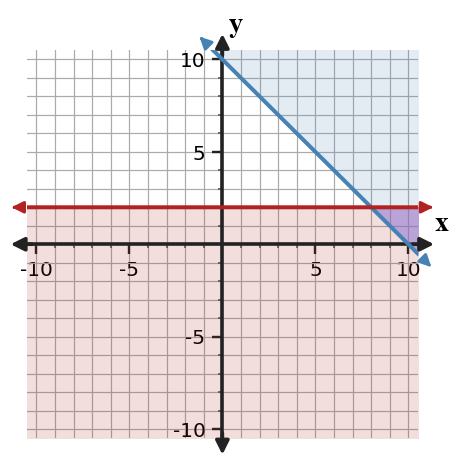

9.
A student graphs $y\lt -x+4$ using a solid boundary and shading above the line.

Critique the graph. Name both decisions that must be checked and state how to revise the graph.
Practice factoring trinomials by connecting product-sum reasoning, area models, and equivalent products. Focus on choosing factor pairs that satisfy both the product and the middle term.
Identify the $a$, $b$, and $c$ values in each trinomial $ax^2+bx+c$.
Factor each polynomial completely.
A student factors $2x^2+5x+3$ as $(2x+3)(x+1)$ and $2x^2+11x-6$ as $(2x-1)(x+6)$.
Critique both answers. For any incorrect answer, identify the error and revise it.
Synthesize three representations of one trinomial: a diamond problem, a generic rectangle description, and a factored expression. The trinomial must have leading coefficient $2$ and constant term $-15$.
After substituting $y=x+6$ into $2x+y=15$, what one-variable equation should be solved?
Does $(2,7)$ satisfy the equation $y=3x+1$?
Substitute $y=5-x$ into $4x+2y=18$ and solve for $x$. Then find $y$.
Solve the system using substitution in the direction you think is most efficient.
A student graphs $y\lt -x+4$ using a solid boundary and shading above the line.
Critique the graph. Name both decisions that must be checked and state how to revise the graph.
The inequality $y\ge x-2$ and the table are supposed to agree about which points satisfy the inequality.
| Point | $(0,0)$ | $(3,0)$ | $(1,1)$ | $(-2,-3)$ |
|---|---|---|---|---|
| Listed result | Yes | Yes | Yes | No |
Find the first mismatch, correct it, and justify with substitution.
A student council has \$200 for prizes. Small prizes cost \$8 and large prizes cost \$15. They want at least 18 total prizes. Let $s$ be small prizes and $l$ be large prizes.
The graph is intended to show feasible combinations for $x+y\le 10$ and $y\ge 2$.

For $g(x)=f(x-4)$, describe the translation from $f$ to $g$.
A bank account starts at 500 dollars and earns 4 percent interest each year. Write the multiplier, build a three-year table, and explain how the repeated percent change supports the family.
A student graphs $y=|x+2|-4$ with vertex $(2,-4)$. Critique the error using the equation structure and describe how the graph should be revised.
A petri dish has 6 bacteria at hour 0 and doubles each hour. The equation is $y=6(2)^x$, and the table gives $(0,6),(1,12),(2,24),(3,48)$. Write the missing graph description that would make the family choice unmistakable.